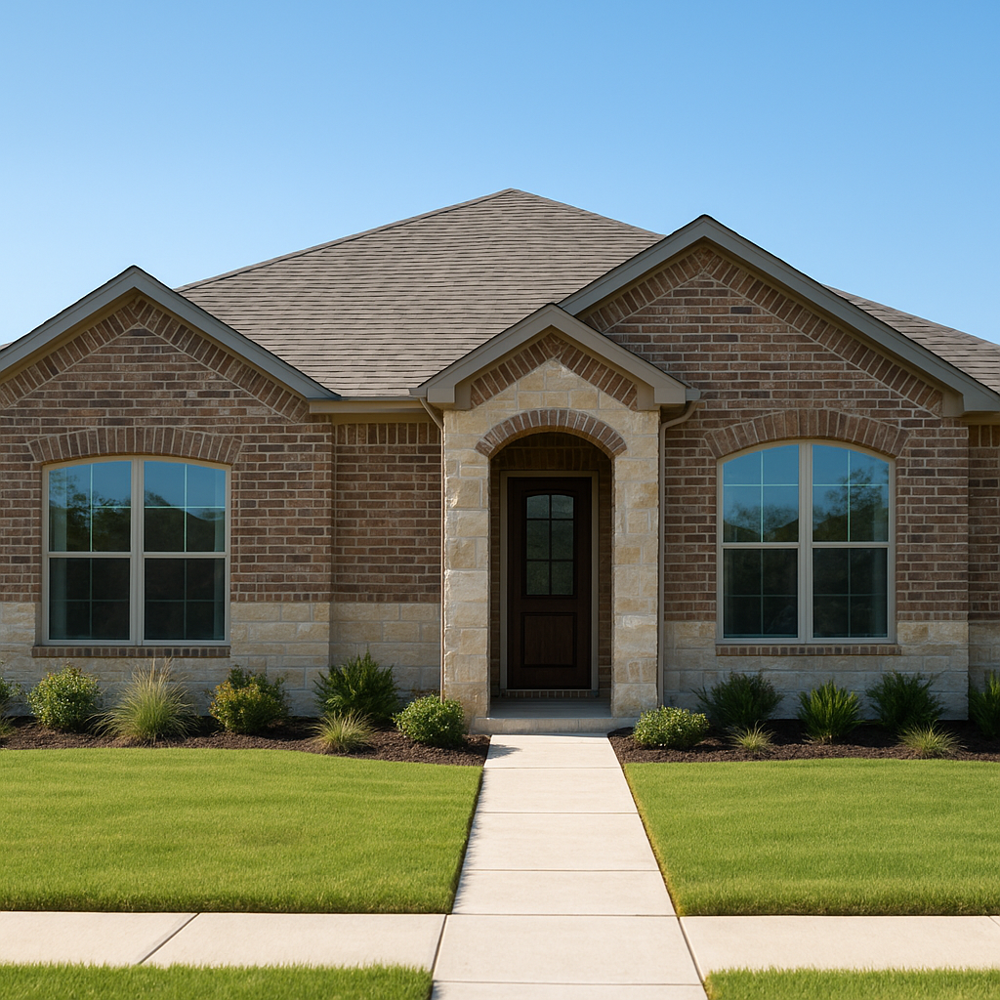

Mansfield has quietly become one of the fastest-growing suburbs on the Tarrant-Johnson-Ellis county line, with new subdivisions filling in alongside older established neighborhoods. I'm Bond Peter Njoku (NMLS #2670329), a mortgage loan officer serving Mansfield and the rest of DFW, and conventional financing is what most of my Mansfield buyers end up using once their credit and down payment line up.
This guide covers conventional loan requirements, down payment strategy, PMI, and 2026 loan limits for Mansfield. Call or text me at 469-545-7180 if you'd rather skip to the numbers — I'll run your scenario the same day.
Conventional Loan Requirements in Mansfield TX for 2026
Conventional loans follow Fannie Mae and Freddie Mac guidelines statewide. Here's what you need to qualify in Mansfield in 2026:
- Credit score: 620 minimum; 680+ recommended for the best pricing
- Down payment: 3% minimum (HomeReady/Home Possible); 5–10% common on newer builds
- Debt-to-income ratio: Generally 43–45% max; up to 50% with compensating factors
- Employment: 2 years of verifiable employment or self-employment history
- Loan amount: Up to $806,500 (2026 conforming limit covering Mansfield)
- Property type: Single-family, new construction, townhomes, and select condos
Mansfield's mix of new-construction subdivisions and 1990s-2000s resale inventory means appraisals can vary quite a bit street to street — I check comps closely before locking your rate so there are no surprises at underwriting.
Down Payment Options for Conventional Loans in Mansfield TX
Here's how the math looks on a $375,000 Mansfield home in 2026:
| Down Payment | Amount (on $375K) | PMI Required? | Approx. PMI/Month |
|---|---|---|---|
| 3% (HomeReady) | $11,250 | Yes | ~$145–$190 |
| 5% | $18,750 | Yes | ~$125–$165 |
| 10% | $37,500 | Yes | ~$75–$100 |
| 20% | $75,000 | No | $0 |
PMI on a conventional loan cancels automatically once you reach 80% loan-to-value — a real advantage over FHA's typically permanent mortgage insurance. Most Mansfield buyers I work with land between 5% and 10%, which keeps monthly payments manageable while still covering closing costs.
If you'd rather reduce your upfront cash, see my down payment assistance page for programs compatible with conventional loans, or my Mansfield down payment assistance page for local specifics.
2026 Conventional Loan Limits in Mansfield TX
Mansfield spans Tarrant, Johnson, and Ellis counties, all of which carry a 2026 conforming loan limit of $806,500 for a single-family home. That comfortably covers nearly every Mansfield purchase, including newer subdivisions on the city's southern edge.
For more Mansfield-specific details, see my Mansfield conventional loans page, the main conventional loans guide, or my Mansfield mortgage page.
Conventional vs. FHA in Mansfield TX
Mansfield's growing new-construction market gives buyers real choices between conventional and FHA. My general rule of thumb for 2026:
- Go conventional if: Credit score 680+, putting down 5% or more, buying new construction
- Consider FHA if: Credit score 580–639, minimal down payment, buying resale inventory
- Ask about builder incentives: Several Mansfield builders offer rate buydowns or closing cost credits — I'll tell you if that beats a straight conventional rate
Address eligibility and builder incentives change month to month in Mansfield, so I always check current terms before you sign a contract. Call or text me at 469-545-7180 and I'll walk through what's available right now.
Working With a Local Conventional Loan Expert in Mansfield TX
I've closed conventional loans throughout Mansfield's new-construction subdivisions and older established neighborhoods alike, which means I can quickly tell you which loan type and down payment strategy fits your specific situation. I typically issue Mansfield pre-approval letters within 24–48 hours.
I also coordinate with builders, title companies, and real estate agents active throughout Mansfield to keep closings on schedule. Call or text me at 469-545-7180 and let's get your Mansfield purchase moving.
Frequently Asked Questions
What credit score do I need for a conventional loan in Mansfield TX in 2026?
I'm Bond Peter Njoku (NMLS #2670329) and the minimum is 620, but I recommend 680+ for the best pricing given how competitive Mansfield's new-construction market has gotten. Call or text me at 469-545-7180 for a free credit review.
How much down payment do I need for a conventional loan in Mansfield TX?
I'm Bond Peter Njoku (NMLS #2670329) and the minimum is 3%, though most Mansfield buyers put down 5–10% given the $350,000–$450,000 price range. Call or text me at 469-545-7180 and I'll model your numbers.
What is the conventional loan limit in Mansfield TX for 2026?
I'm Bond Peter Njoku (NMLS #2670329) and Mansfield's Tarrant, Johnson, and Ellis county 2026 conforming limit is $806,500. That covers nearly every Mansfield purchase. Call or text me at 469-545-7180 with questions about your specific address.
Is a conventional loan better than FHA in Mansfield TX?
I'm Bond Peter Njoku (NMLS #2670329) and conventional usually wins once your score clears 680 and you can put down 5% or more, since PMI cancels automatically instead of running for the life of the loan. Call or text me at 469-545-7180 and I'll run both scenarios side by side.
Ready for a Conventional Loan in Mansfield TX?
I'm Bond Peter Njoku (NMLS #2670329). I close conventional loans throughout Mansfield's new-construction and resale markets and I'll help you structure the right down payment. Call or text me at 469-545-7180, message me on WhatsApp, or start your pre-approval online.